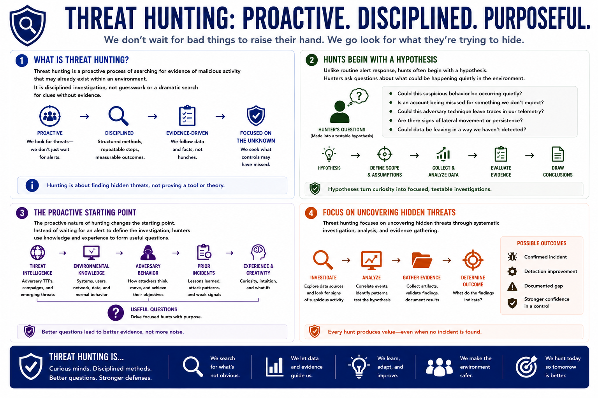

What is Threat Hunting?
What Is Threat Hunting?
Connecting to LMS... Progress: in progress
Version 1.0 | Introductory overview of defensive threat hunting practices.

Narration
Threat hunting is a proactive process of searching for evidence of malicious activity that may already exist within an environment. It is disciplined investigation, not guesswork or a dramatic search for clues without evidence.
Unlike routine alert response, hunts often begin with a hypothesis. A hunter may ask whether a suspicious behavior could be occurring quietly, whether an account is being misused, or whether a technique could leave traces in available telemetry.
The proactive nature of hunting changes the starting point. Instead of waiting for an alert to define the investigation, hunters use threat intelligence, environmental knowledge, adversary behavior, and prior incidents to form useful questions.
Threat hunting focuses on uncovering hidden threats through systematic investigation, analysis, and evidence gathering. The result may be an incident, a detection improvement, a documented gap, or stronger confidence in an existing control.